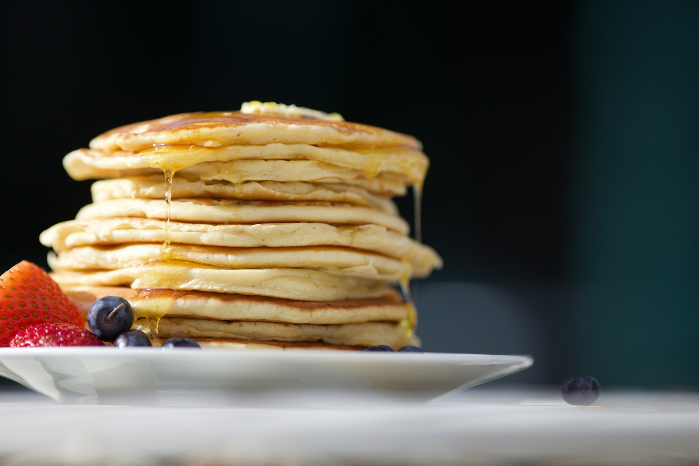

Home
Pancakes

Photo by Luke Pennystan on Unsplash
Description
Pancakes are my comfort / soul food. They are easily made - with just a few ingredients.
Pancakes pair well with maple syrup, compote or cinnamon sugar.
Ingredients
- 1 cup all-purpose flour
- 2 tbsp white sugar
- 2 tsp baking powder
- 1 pinch salt
- 1 cup milk
- 2 tbsp vegetable oil
- 1 large egg
Steps
- Combine 1 cup flour and 2 tsp baking powder in a large bowl. Add 2 tbsp white sugar and a pinch of salt. Now mix everything in the bowl.
- Pour in 1 cup milk, 2 tbsp vegetable oil and 1 large egg. Mix until smooth.
- Heat a lightly oiled frying pan over medium-high heat.
- Pour or scoop about ¼ cup batter per pancake onto the frying pan; cook until bubbles form and the edges are dry - 1 to 2 minutes. Flip; cook until browned on the other side. Repeat with remaining batter.
- Serve hot with all the toppings you like best.